AI Academy · Level 4 · Grade 9 · Week 34 · Student lesson
Capstone Dataset and Baseline
Learn to understand, design, build, test and explain AI systems responsibly.
Project: Responsible Plant Classifier
Before you start
Weeks 8,10 and 24: group identities and fit the baseline on training only.
Plan time to read, investigate and explain. Keep predictions separate from observations.
Student lesson · 1 of 16
Your mission
Your learning target
I can define a feasible capstone question and acceptance criteria.
I can create a data and split plan before modelling.
I can specify evidence, privacy and a fallback.
Remember before reading
Close your notes first. A rough first answer helps us choose the right starting point; it is not a score for your ability.
Without opening the old lesson, explain one key idea from Model Cards and Human Review. Give an example and a mistake that the idea helps you avoid.
Without opening the old lesson, explain one key idea from Subgroup Performance. Give an example and a mistake that the idea helps you avoid.
Without opening the old lesson, explain one key idea from Learning Curves. Give an example and a mistake that the idea helps you avoid.
After trying, check the relevant lesson or ask your teacher. Change the part of your explanation that the evidence shows was wrong.
A responsible capstone begins by freezing the problem, intended use, dataset documentation, grouped split, and baseline evidence.
Builder name and experiment date:
Readiness for the connected explanation
Which evaluation choices should precede model selection?
Readiness for Capstone models and baselines
What must be fixed before the capstone comparison?
This week’s end goal
By the end, I can explain capstone dataset and baseline using a traced example and a stated limitation.
Student lesson · 2 of 16
Notice the evidence
PICTURE ENTRY
Notice → Predict → Explain
Begin with visible evidence; do not explain more than the picture and information support.
Name three visible details without interpreting them.
Predict the data, model, or evaluation decision being made.
Identify one hidden assumption that could change the result.
State what evidence would confirm or reject your prediction.
My prediction and supporting evidence:
A closer explanation
The capstone is a classroom investigation, not a product launch. Choose the supplied fictional clear/blocked parcel task or an equally bounded teacher-approved synthetic task. Write a question that can be answered by comparing a simple model against a baseline. Do not use private student records or real safety decisions.
Use fictional classroom data throughout this investigation. Keep the task, units, reference labels and data split visible as you reason. Earlier weeks supplied the model-building process; this week examines capstone data and requirements.
Apply the connected idea: Capstone models and baselines
Build the baseline before the candidate. For classification, use the most common training class, with a declared tie policy. Choose one simple candidate using techniques already learned, such as k-nearest neighbours with training-only scaling and a fixed k. Record every development attempt; complexity earns no automatic credit.
Use fictional classroom data throughout this investigation. Keep the task, units, reference labels and data split visible as you reason. Earlier weeks supplied the model-building process; this week examines capstone models and baselines.
Student lesson · 3 of 16
See how it works
ML MECHANISM
Input → Model → Evidence
Trace the information, fitted behavior, and evaluation proof separately.
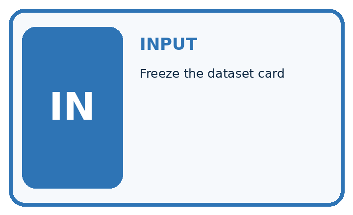
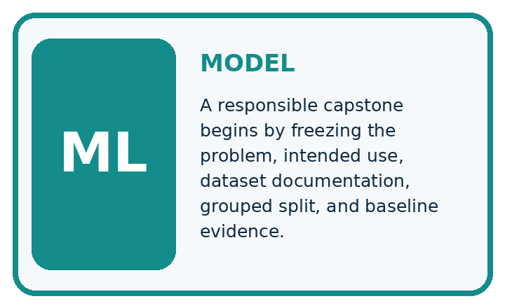
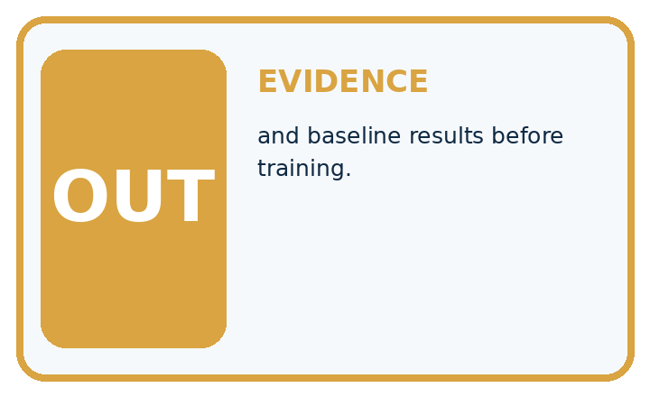
QUESTION Freeze the dataset card, split, and baseline results before training.
MODEL IDEA A responsible capstone begins by freezing the problem, intended use, dataset documentation, grouped split, and baseline evidence.
PROOF NEEDED Use an unseen case, visible calculation, error analysis, and a stated limitation.
Draw a fresh data → model → prediction → evaluation trace:
A closer explanation
Example proposal: can a small classifier improve validation accuracy over the training-majority baseline on fictional parcel measurements? Before modelling, assign 40 training, 20 validation and 12 final-test records, with related parcel groups kept together. Define blocked as positive, keep a fixed label rule, and reserve test labels with the teacher until Week 35.
Before continuing, underline the decision rule and circle the evidence that supports the conclusion. Explain the example to a partner without replacing the counts or conditions with a stronger claim. Keep the distinction between an observed result and a proposed next step.
Your teacher can prepare the 72-record fictional grid described in the teacher guide, or approve another documented synthetic dataset. Each supplied record has an ID, group ID, width and height in cm. Training and validation labels are released for development; final-test labels stay with the teacher until the model is frozen. The numerical results in later worked examples are illustrative and are not expected scores for your project.
Apply the connected idea: Capstone models and baselines
Illustrative training has 30 clear and 10 blocked cases, so the baseline always predicts clear. On 20 validation cases with 14 clear and 6 blocked, its matrix is[[14, 0],[6, 0]], accuracy 70 percent. Candidate matrix[[12, 2],[2, 4]] gives accuracy 80 percent, precision 4/6 and recall 4/6. These are example results, not the student team results.
# A check of the illustrative validation matrix.
# Replace with your own saved counts; do not invent results.
tn, fp, fn, tp = 12, 2, 2, 4
n = tn + fp + fn + tp
print("accuracy", (tn + tp) / n)
print("precision", tp / (tp + fp))
print("recall", tp / (tp + fn))
# Compare with the training-majority baseline: 14 / 20.Trace the calculation on paper before running this optional Python check. Use the stated fictional inputs and compare intermediate values. The code checks this example; your independent workbook case uses different evidence.
Connect the picture and the explanation
Point to the input, the deciding step and the result in this week’s visual. Explain the same step in ordinary words. A picture helps when you can say what each part represents.
Student lesson · 4 of 16
Compare the cases
EVALUATION DESIGN
Four Tests, Four Kinds of Evidence
A system is not understood until it survives more than one comfortable example.


NORMAL Expected data and expected behavior.
BOUNDARY Value close to a threshold, ambiguous label, or uncertain prediction.
MISSING Necessary field, label, source, or measurement is unavailable.
SHIFTED New lighting, species, device, subgroup, or time condition.
Which case most threatens today's claim, and why?
Change one thing in the pictured case
Change: A derived crop of plantG is added to training.
Prediction: The final group separation is violated.
Reason: The crop retains the same source plant identity even with a new file name.
Student lesson · 5 of 16
Words that unlock the idea
VOCABULARY
Words You Can Calculate and Defend
A definition matters when it lets you interpret a new dataset, model, or result.
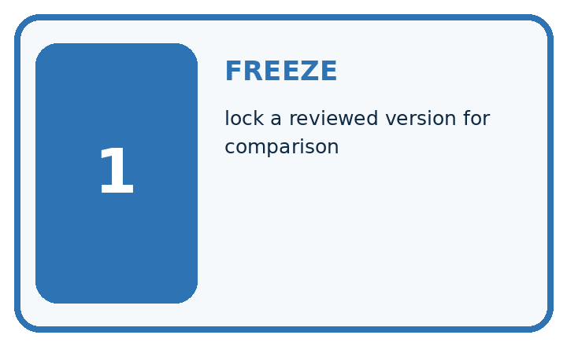
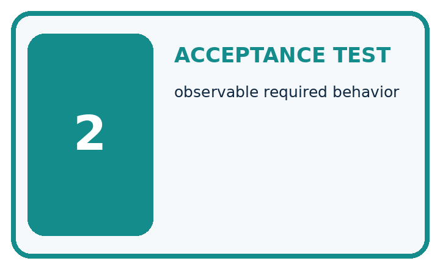
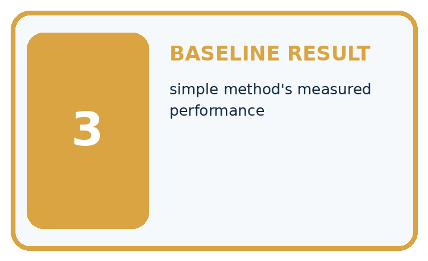
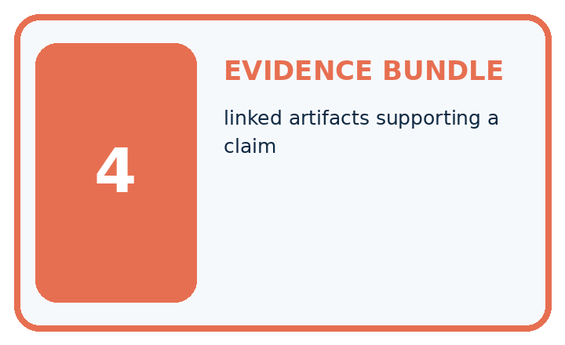
| Term | Precise meaning | My ML example |
|---|---|---|
| freeze | lock a reviewed version for comparison | |
| acceptance test | observable required behavior | |
| baseline result | simple method's measured performance | |
| evidence bundle | linked artifacts supporting a claim |
Repair the claim using a definition, calculation, or test record:
Words used in the closer explanation
| Word | Meaning |
|---|---|
| Requirement | A concrete condition the project must meet |
| Acceptance criterion | Evidence that decides whether a requirement is met |
| Data dictionary | Definitions and units for dataset fields |
| Milestone | A review point with a stated deliverable |
Terms for Capstone models and baselines
| Term | Meaning |
|---|---|
| Baseline | A simple reference method fitted or chosen from training |
| Prediction ledger | A per-record table of reference and predicted outputs |
| Frozen artifact | A saved model and procedure that will not change during testing |
| Decision record | A written reason for a development choice |
Student lesson · 6 of 16
Follow a worked example
WORKED EVIDENCE
Reason Step by Step
Predict first. Then check each step. A correct answer without visible evidence cannot be audited.
Four-step worked evidence for Week 34: Capstone Dataset and Baseline
STEP 1 Freeze dataset card v3 and grouped split s2 with no plant identity crossing sets.
STEP 2 Test set remains sealed; validation supports model choices.
STEP 3 Validation has 12 healthy and 8 spotted leaves. The always-healthy baseline scores 12/20=60% accuracy and 0/8=0% spotted recall. The rule has TP=5, FN=3, TN=10, FP=2: accuracy 75% and spotted recall 62.5%.
STEP 4 Acceptance requires valid citations, metric calculations, subgroup review, and safe escalation.
Recalculate, retrace, or restate the evidence independently:
A closer explanation
Capstone data and requirements at a glance
Apply the connected idea: Capstone models and baselines
Capstone models and baselines at a glance
Learn from the worked case
Cover the result before checking it. Say what is given, choose the procedure, and follow one step at a time. Then uncover the result and explain your first mismatch. Ask why a step is allowed, not only what number it produces.
A pictorial worked case: Capstone Dataset and Baseline
Plan the plant capstone around independent groups and a baseline before collecting more rows.
The facts we will use
Toy proposed dataset: 8 plants, 3 photos each. Development groupsA–F; final groupsG, H. Target is visible-spot status, with review for hidden leaves.
All inputs and outcomes in this worked example are invented classroom data; no real model run is claimed.

Read the picture one step at a time
Why this result follows
Read the picture in order. Fit majority label only from development training; record metrics and error types. The arrows show which recorded input or intermediate result each decision uses. Explain the deciding step aloud before checking the changed case; pointing to the final answer alone does not show how it follows.
What this example does not establish
A well-planned split does not create sufficient sample size; two held-out plants support only a very narrow claim.
Read the labelled picture: What provenance field prevents the crop from appearing independent? Point to the relevant step in the picture, then write the changed result and the rule or evidence that supports it.
Change one thing: A derived crop of plantG is added to training. Predict the result before checking the explanation. What remains the same?
Student lesson · 7 of 16
Find and repair a mistake
ERROR DETECTIVE
Compare → Diagnose → Repair
Do not patch the answer. Find the earliest unsupported assumption, data problem, or experiment error.
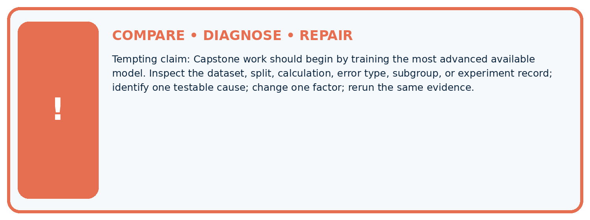
| Evidence record | Expected | Actual | Likely cause / next test |
|---|---|---|---|
| normal case | passes | ||
| boundary case | defined behavior | ||
| missing case | safe fallback | ||
| shifted case | measured limit |
Diagnose one cause and name the cleanest next experiment:
A closer explanation
Submit a one-page proposal, data dictionary, split-membership record and risk/limitations note. The teacher approves feasibility and synthetic-data scope before modelling. If there are too few valid records for an independent test, use a clearly labelled demonstration and explicitly limit the claim rather than inventing evidence.
Apply the connected idea: Capstone models and baselines
The deliverable is a runnable or fully traceable baseline/candidate comparison, a validation table and a signed-off freeze record. If the baseline wins, retain it and explain why. If a pipeline fails, record the failure and fix it on development data before requesting final testing.
Student lesson · 8 of 16
Practise together
ML STUDIO
Specify Before You Run
A trustworthy result can be reproduced from the recorded data, code, settings, and evaluation rule.

Experiment record
QUESTION + intended use + success threshold
DATA version + grouped split + leakage check
CODE/preprocessing + features + model + settings + seed
METRICS + positive class + units + denominators
PREDICTIONS + errors + subgroup slices + limitations
HUMAN reviewer + release, revise, limit, or stop decision
Write the minimum record needed to reproduce today's result:
A closer explanation
Acceptance criteria describe the process even if the model loses: no split leakage; predictions for every planned case or documented failures; the same metric for baseline and candidate; precision/recall with denominators; a model card with limits. Improvement is a research outcome, not a grade requirement.
Apply the connected idea: Capstone models and baselines
Save the data version, feature order, preprocessing values, model settings, tie policy and predictions. A prediction ledger includes row ID, split, reference, baseline output, candidate output and error type. Test labels remain held by the teacher. A peer should be able to reproduce one row by hand.
Practise with less help: Define fields
Use workbook W2 for the connected example “Capstone data and requirements”. First fill the input and rule boxes. Try the middle steps before asking for a hint. After a hint, try the next step yourself.
| Plan | Do | Check |
|---|---|---|
| What is given? Which rule or procedure applies? | Record each intermediate step. | Does the result follow? What remains unknown? |
Explain your trace to a partner. Your partner points to one step to check. Swap roles on the next case. Each person writes their own explanation.
Check your reasoning
Use the worked case for Capstone data and requirements. Proposed explanation: “A final answer is enough”. Decide whether this explanation is supported. Point to the step or supplied fact that decides; explain your repair if needed.
Answer on your own before discussion. If you are unsure, say which step you need help with.
Practise the connected topic: Capstone models and baselines
Use its named workbook W2. Identify the given inputs, try the middle steps with less help, then explain your trace. Check this claim before group discussion: A final answer is enough
Explain the picture
What provenance field prevents the crop from appearing independent? Point to the relevant step in the picture, then write the changed result and the rule or evidence that supports it.
This is supported practice. Keep the separately named independent case for an attempt before feedback.
Student lesson · 9 of 16
Run the investigation
EVIDENCE LAB
Predict → Run → Calculate → Interpret
Keep the test conditions fixed, record every result, and change only one planned factor.
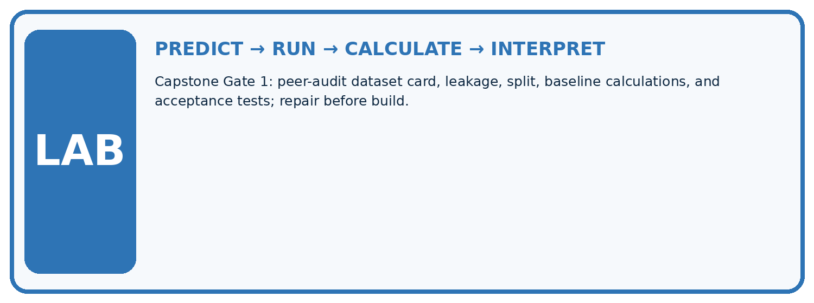
1. Write the hypothesis and expected evidence before running.
2. Capstone Gate 1: peer-audit dataset card, leakage, split, baseline calculations, and acceptance tests; repair before build.
3. Run one normal, one boundary, one missing, and one shifted case.
4. Calculate the metric from raw counts or row-level errors.
5. Interpret what changed, what did not, and what remains unsafe or unknown.
| Case | Prediction | Actual | Calculation / evidence | Meaning / next test |
|---|---|---|---|---|
| Normal | ||||
| Boundary | ||||
| Missing | ||||
| Shifted |
Plan → try → check
Before trying: what do I expect, and why? While trying: which step could first go wrong? Afterwards: what did I actually observe, and what should change? Keep “not run” if you only traced the procedure.
Student lesson · 10 of 16
Build your understanding
MASTERY
From Knowing the Word to Owning the Idea
Move upward only when you can produce evidence without copying the example.

DEFINE Use all four terms precisely: freeze, acceptance test, baseline result, evidence bundle.
CALCULATE Reproduce the worked evidence with units and denominator.
TRACE Explain the data, code or decision path.
DIAGNOSE Capstone work should begin by training the most advanced available model.
TRANSFER Solve a fresh dataset or model case.
IMPROVE Change one cause and rerun fixed evidence.
DEFEND State intended use, metric, limitation, and human responsibility.
Student lesson · 11 of 16
Connect your project
CUMULATIVE PROJECT
Responsible Plant Classifier
Every week adds one reviewable artifact to the same evidence-based capstone.
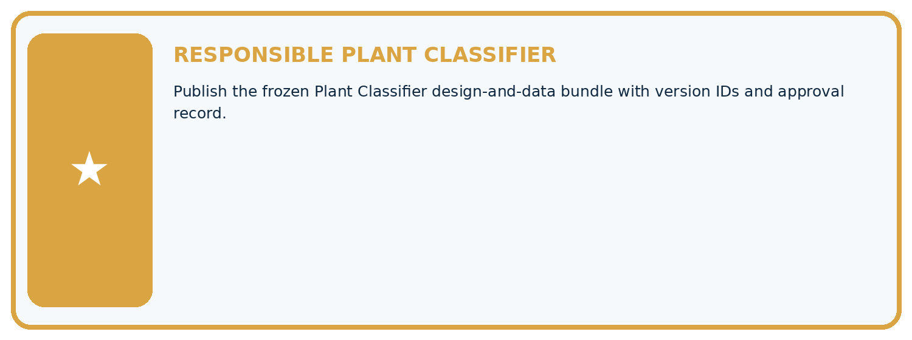
Which requirement or risk does this artifact address?
Which dataset, split, code, and metric version does it use?
What normal and shifted cases were tested?
What remains uncertain or weak?
What decision still belongs to a teacher or qualified human?
My evidence-linked project decision:
Evidence for your project
For your Responsible Plant Classifier, save the input, procedure, observed result and limitation of this check. Label this worked example as practice; use a different, previously unreviewed case when checking independent understanding.
Student lesson · 12 of 16
Show what you know
INDEPENDENT PROOF
Explain • Calculate • Transfer • Defend
Complete this with a fresh case after guided practice and compare it with the mastery criteria.
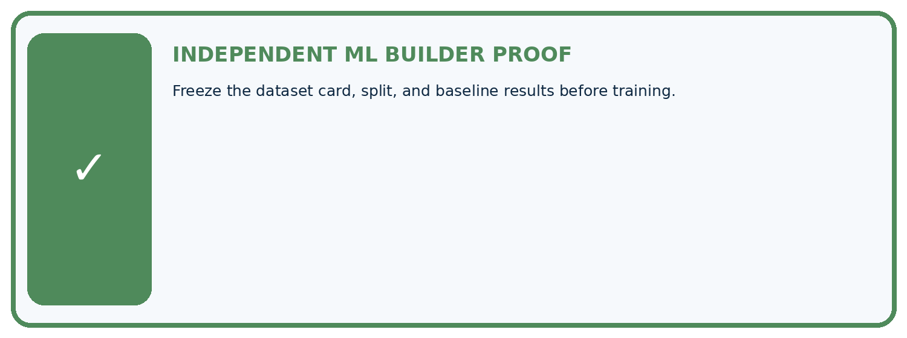
□ Define the task, feature/target roles, and intended-use boundary.
□ Show the calculation, code trace, or experiment record.
□ Test a normal case and one revealing boundary, missing, or shifted case.
□ Diagnose one failure without changing several factors at once.
□ Name a limitation, fairness concern, and the human-review action.
Independent evidence and defense:
My level: □ Not yet □ With one hint □ Independently □ I can teach and defend it
Student lesson · 13 of 16
Study a complete case
Week 34 Worked case
Use the supplied details to practise the weekly concept before attempting the independent question. This case extends the illustrated lesson.
The situation
Capstone has60 independent leaves, several photos per leaf, healthy/spotted labels.
The question
Plan grouping and baseline.
Worked explanation
Keep all views together in train/validation/test partitions. Define labels/use, fit a majority baseline on training labels and evaluate declared metrics.
Explain it in your own words
Which detail supports the answer, and why does it matter?
Trace the supplied case visually
Begin the capstone with independent groups
| Evidence or stage | Value or result |
|---|---|
| Dataset | Sixty leaves, multiple views each |
| Group | Keep views of one leaf together |
| Partition | Separate train, validation and test |
| Baseline | Fit majority choice on training labels |
Capstone has60 independent leaves, several photos per leaf, healthy/spotted labels.
Plan grouping and baseline.
Keep all views together in train/validation/test partitions. Define labels/use, fit a majority baseline on training labels and evaluate declared metrics.
Student lesson · 14 of 16
Try a new case independently
Independent case: Apply independently
A proposed 80-row dataset has 40 related pairs, and the team splits individual rows randomly then uses pair ID as a feature. Revise its plan.
Attempt this case before feedback. Record any help. Earlier examples below are further practice; a case already practised with feedback cannot establish fresh transfer.
Week 34 Independent application
Close the worked explanation. Apply the idea to this different question without copying.
Your capstone dataset includes duplicate photographs in both training and validation. What should be repaired before measuring the baseline?
My answer, with a trace, calculation or supporting evidence
Create and test
Change one relevant detail. Predict the result before testing. Include a boundary or missing-information case when it helps reveal a limit.
My changed input and expected result
Connect to your project
Publish the frozen Plant Classifier design-and-data bundle with version IDs and approval record.
The evidence I will keep
Your teacher has the independent answer and scoring criteria. Complete the matching workbook week to keep your practice evidence together.
Transfer practice from the original programme
A capstone has two views of each of 40 leaves. Specify a 24/8/8 leaf split and baseline procedure. When may final labels be consulted?
Use feedback to improve
Attempt the independent case before hints. Record whether you worked alone, used a hint or followed a model. After feedback, fix the first unsupported step and explain why it changed. A later check uses a changed case, not a copied answer.
Student lesson · 15 of 16
Your lesson route
Start with this question: Plan the plant capstone around independent groups and a baseline before collecting more rows.
| By the end, I can | How I will show it |
|---|---|
| Define a feasible capstone question and acceptance criteria | Explain the deciding step, show a trace or test, and state one limit. |
| Create a data and split plan before modelling | Explain the deciding step, show a trace or test, and state one limit. |
| Specify evidence, privacy and a fallback | Explain the deciding step, show a trace or test, and state one limit. |
Remember → watch and explain → try with help → investigate → try independently → keep project evidence. Your teacher may spread this lesson across several classes.
Keep your first prediction. Compare it with what the evidence shows and explain any change.
Student lesson · 16 of 16
Finish and return
Close your notes. Explain this goal in your own words: Define a feasible capstone question and acceptance criteria
If you are unsure, return to the worked picture and explain one arrow. If you are ready, change an input or assumption and justify your prediction.
Save your workbook evidence. At the next review, try a different case before opening your old answer.